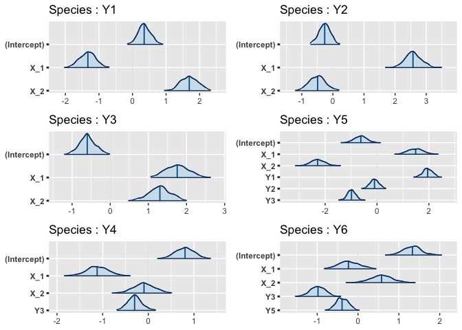
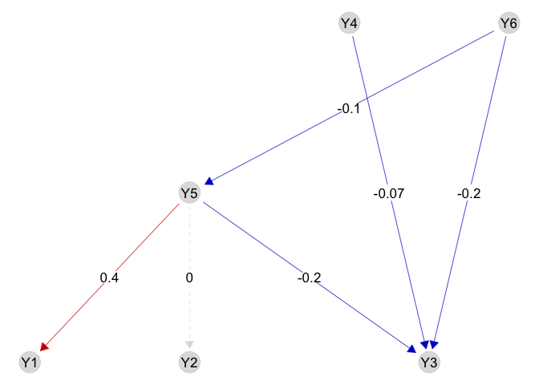
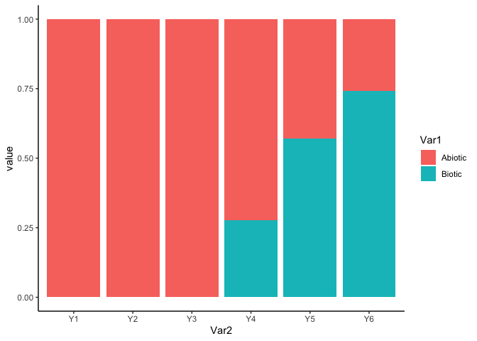

webSDM implements the trophic SDM model described in Poggiato et al., “Integrating trophic food webs in species distribution models improves ecological niche estimation and prediction”. Trophic SDM integrate a known trophic interaction network in SDM, thus providing more realistic and ecologically sound predictions. We here after present a quick introduction to some of the feature of the package, but we refer to the vignettes and the help functions for a more complete documentation of our package.
library(devtools)
## Le chargement a nécessité le package : usethis
# Run to install webSDM
install_github("giopogg/webSDM")
## Skipping install of 'webSDM' from a github remote, the SHA1 (ac0a38e0) has not changed since last install.
## Use `force = TRUE` to force installation
library(webSDM)
## Registered S3 method overwritten by 'GGally':
## method from
## +.gg ggplot2
library(ggplot2)
library(rstanarm)
## Le chargement a nécessité le package : Rcpp
## This is rstanarm version 2.21.3
## - See https://mc-stan.org/rstanarm/articles/priors for changes to default priors!
## - Default priors may change, so it's safest to specify priors, even if equivalent to the defaults.
## - For execution on a local, multicore CPU with excess RAM we recommend calling
## options(mc.cores = parallel::detectCores())Fitting a trophic SDM require the species distribution data, the environmental covariates and a known trophic interaction network.
We load a simulated datasets, where Y contains the species distribution data (a site x species matrix), X the environmental covariates (a sites x covariates matrix) and G is an igraph object describing the interaction network (with links going from predators to prey). We specify, for every species, a quadratic relationship with respect to the environment, and we fit a model assuming bottom-up control (i.e., predators are modeled as a function of preys). We fit the trophicSDM in the Bayesian framework.
data(X, Y, G)
m = trophicSDM(Y = Y, X = X, G = G, env.formula = "~ X_1 + X_2",
family = binomial(link = "logit"),
mode = "prey", method = "stan_glm")We can see the formula of each glm in the argument $form.all
m$form.all
## $Y1
## [1] "y ~ X_1 + X_2"
##
## $Y2
## [1] "y ~ X_1 + X_2"
##
## $Y3
## [1] "y ~ X_1 + X_2"
##
## $Y5
## [1] "y ~ X_1+X_2+Y1+Y2+Y3"
##
## $Y4
## [1] "y ~ X_1+X_2+Y3"
##
## $Y6
## [1] "y ~ X_1+X_2+Y3+Y5"We can have a first look to regression coefficients using the function plot.
plot(m)
We can access to the regression coefficients (eventually standardised) with the function coef.
coef(m, standardise = T, level = 0.9)
## $Y1
## estimate 5% 95%
## (Intercept) 0.3611008 0.3611008 0.3611008
## X_1 -0.2017994 -0.2635303 -0.1462718
## X_2 0.2574111 0.2002638 0.3160109
##
## $Y2
## estimate 5% 95%
## (Intercept) -0.27266453 -0.2726645 -0.27266453
## X_1 0.38453921 0.3197835 0.44708813
## X_2 -0.07511756 -0.1370468 -0.01154298
##
## $Y3
## estimate 5% 95%
## (Intercept) -0.6012845 -0.6012845 -0.6012845
## X_1 0.2657625 0.2051166 0.3416602
## X_2 0.1968746 0.1398637 0.2662955
##
## $Y5
## estimate 5% 95%
## (Intercept) -0.6161529 -0.61615287 -0.61615287
## X_1 0.2004465 0.13341527 0.26638533
## X_2 -0.3079627 -0.37020467 -0.24150146
## Y1 0.4405148 0.36783901 0.51000132
## Y2 -0.0235910 -0.08555366 0.03422148
## Y3 -0.2090331 -0.26525033 -0.15437886
##
## $Y4
## estimate 5% 95%
## (Intercept) 0.78636965 0.7863697 0.7863697
## X_1 -0.17165422 -0.2333396 -0.1068042
## X_2 -0.01173355 -0.0709376 0.0465938
## Y3 -0.07646308 -0.1335219 -0.0203567
##
## $Y6
## estimate 5% 95%
## (Intercept) 1.32355972 1.32355972 1.32355972
## X_1 -0.03406930 -0.08847628 0.02425854
## X_2 0.08715050 0.03048236 0.14694041
## Y3 -0.23999395 -0.30474987 -0.17188008
## Y5 -0.09962868 -0.16450221 -0.03954318We can visualise the biotic coefficients with the function plotG_inferred

We can also visualise the importance of each (set of) variable with the function `computeVariableImportance’
VarImpo = computeVariableImportance(m,
groups = list("Abiotic" = c("X_1","X_2"),
"Biotic" = c("Y1","Y2", "Y3", "Y4", "Y5", "Y6")))
VarImpo = apply(VarImpo, 2, function(x) x/(x[1]+x[2]))
tab = reshape2::melt(VarImpo)
tab$Var2 = factor(tab$Var2, levels = colnames(Y))
ggplot(tab, aes(x = Var2, y = value, fill = Var1)) + geom_bar(stat="identity") +
theme_classic()
We can access each local model in the field $model and then select a given local model, that can be analysed using some the implemented methods
m$model$Y5
## ==================================================================
## Local SDMfit for species Y5 with no penalty , fitted using stan_glm
## ==================================================================
## * Useful S3 methods
## print(), coef(), plot(), predict()
## $model gives the stanreg class object
## ==================================================================We can predict with a fitted trophic SDM in multiple ways. The most straightforward way is to use the function predict. We can for example obtain 50 draws from the posterior predictive distribution of species (pred_samples = 50) using predicted presence-absences of species to predict their predators (prob.cov = TRUE). When we don’t specify Xnew, the function sets Xnew = X by default. We can thus obtain the fitted values of the model and compute goodness of fit metrics. Notice that other metrics like AIC or loo are also available.
Ypred = predict(m, fullPost = FALSE, pred_samples = 50, prob.cov = FALSE)
# predict returns a list contaning for each species the predictive samples at each site
# But since we specified fullPost = FALSE it only give back the predictive mean and quantiles
Ypred = do.call(cbind,
lapply(Ypred, function(x) x$predictions.mean))
Ypred = Ypred[,colnames(Y)]
evaluateModelFit(m, Ynew = Y, Ypredicted = Ypred)
## auc tss species
## 1 0.6733744 0.2769949 Y1
## 2 0.7050628 0.3100426 Y2
## 3 0.6691045 0.2793124 Y3
## 4 0.5983462 0.1745371 Y4
## 5 0.6179529 0.2144599 Y5
## 6 0.5595635 0.1052858 Y6
m$log.lik
## [1] -3638.838
m$AIC
## [1] 7337.675
loo(m)
## [1] -3651.288We can also evaluate the quality of model predictions using K-fold cross-validation:
CV = trophicSDM_CV(m, K = 3, prob.cov = T, run.parallel = FALSE)
# Transfom in a table
Ypred = CV$meanPred
# Re order columns
Ypred = Ypred[,colnames(Y)]
evaluateModelFit(m, Ynew = Y, Ypredicted = Ypred)We can now evaluate species probabilities of presence for the environmental conditions X_1 = 0.5 and X_2 = 0.5.
Pred = predict(m, Xnew = data.frame(X_1 = 0.5, X_2 = 0.5), fullPost = F)
t(do.call(cbind, Pred))
## predictions.mean predictions.q025 predictions.q975
## Y1 0.6295833 0.6010029 0.6594481
## Y2 0.6849252 0.6579238 0.7127961
## Y3 0.7149874 0.6936391 0.7430782
## Y5 0.3856535 0.08875424 0.7080559
## Y4 0.4974779 0.4371872 0.5717659
## Y6 0.6641026 0.5164383 0.837267We can also obtain an estimation of the fundamental niche, that corresponds, in the bottom-up approach, to the probability of presence of a species given that its preys are present. We can for example compute the probability of presence of species for the environmental conditions X_1 = 0.5 and X_2 = 0.5 assuming all their preys to be present.
Ypred = predictFundamental(m, fullPost = FALSE, pred_samples = 100, Xnew = data.frame(X_1 = 0.5, X_2 = 0.5))Notice that we can also fit a trophic SDM in the frequentist approach.
m = trophicSDM(Y = Y, X = X, G = G, env.formula = "~ X_1 + X_2",
family = binomial(link = "logit"),
mode = "prey", method = "glm")All the above-mentioned functions are also available in the frequentist framework, with adaptations when necessary (e.g. coefficients are significant or not depending on the p-values instead of the credible interval). However, error propagation is not available and we can only obtain one prediction for each species and site, instead of multiple samples in the Bayesian case. ### Penalisation We can infer a sparse model by specifying penal = "horshoe" if we set method = "stan_glm" (i.e. in the Bayesian framework), or penal = "elasticnet" if we set method = "glm" (i.e. in the frequentist framework).
m = trophicSDM(Y = Y, X = X, G = G, env.formula = "~ X_1 + X_2",
family = binomial(link = "logit"),
mode = "prey", method = "glm", penal = "elasticnet")
m = trophicSDM(Y = Y, X = X, G = G, env.formula = "~ X_1 + X_2",
family = binomial(link = "logit"),
mode = "prey", method = "stan_glm", penal = "horshoe")
## Warning: Bulk Effective Samples Size (ESS) is too low, indicating posterior means and medians may be unreliable.
## Running the chains for more iterations may help. See
## https://mc-stan.org/misc/warnings.html#bulk-ess
## Warning: Bulk Effective Samples Size (ESS) is too low, indicating posterior means and medians may be unreliable.
## Running the chains for more iterations may help. See
## https://mc-stan.org/misc/warnings.html#bulk-ess
## Warning: Bulk Effective Samples Size (ESS) is too low, indicating posterior means and medians may be unreliable.
## Running the chains for more iterations may help. See
## https://mc-stan.org/misc/warnings.html#bulk-ess
## Warning: Bulk Effective Samples Size (ESS) is too low, indicating posterior means and medians may be unreliable.
## Running the chains for more iterations may help. See
## https://mc-stan.org/misc/warnings.html#bulk-ess
## Warning: Bulk Effective Samples Size (ESS) is too low, indicating posterior means and medians may be unreliable.
## Running the chains for more iterations may help. See
## https://mc-stan.org/misc/warnings.html#bulk-ess
## Warning: Bulk Effective Samples Size (ESS) is too low, indicating posterior means and medians may be unreliable.
## Running the chains for more iterations may help. See
## https://mc-stan.org/misc/warnings.html#bulk-ess
## Warning: Tail Effective Samples Size (ESS) is too low, indicating posterior variances and tail quantiles may be unreliable.
## Running the chains for more iterations may help. See
## https://mc-stan.org/misc/warnings.html#tail-essWe can include composite variables using the arguments sp.formula and sp.partition. We refer to the vignette ‘Composite variable’ for an exhaustive description of these arguments and how to use them to obtain any kind of model specification. For example, we can model species as a function of of their prey richness.
m = trophicSDM(Y = Y, X = X, G = G, env.formula = "~ X_1 + X_2",
sp.formula = "richness",
family = binomial(link = "logit"),
mode = "prey", method = "glm")
m$form.all
## $Y1
## [1] "y ~ X_1 + X_2"
##
## $Y2
## [1] "y ~ X_1 + X_2"
##
## $Y3
## [1] "y ~ X_1 + X_2"
##
## $Y5
## [1] "y ~ X_1+X_2+I(Y1 + Y2 + Y3)"
##
## $Y4
## [1] "y ~ X_1+X_2+I(Y3)"
##
## $Y6
## [1] "y ~ X_1+X_2+I(Y3 + Y5)"This package is currently developed by Giovanni Poggiato from Laboratoire d’Ecologie Alpine. It is supported by the ANR GAMBAS. The framework implemented in this package is described in: “Integrating trophic food webs in species distribution models improves ecological niche estimation and prediction” Poggiato Giovanni, Jérémy Andréoletti, Laura J. Pollock and Wilfried Thuiller. In preparation.